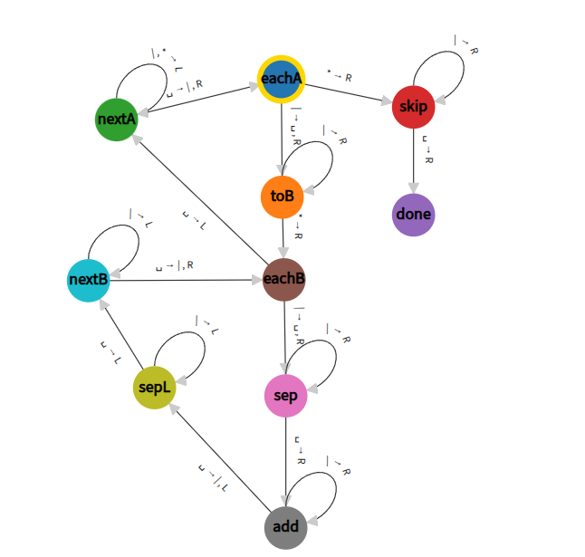

Dodawanie - Maszyna Turinga
Reprezentacja: liczby są zapisane w postaci ciągu jedynek rozdzielonych 0
Wejście: \(B1^m01^nB\)
Wyjście: \(B1^{m+n}BB\)

MT dla dodawania
Jak to działa?
Poznajemy Haskell
Marcin Benke
Wykład 1, 23.02.2026
Lisp is worth learning for […] the profound enlightenment experience you will have when you finally get it.
That experience will make you a better programmer for the rest of your days,even if you never actually use Lisp […]
the same can be said of Haskell, and for very similar reasons.
— Eric S. Raymond, How to Become a Hacker
Here’s my recipe for programming success: […] learn at least a half dozen programming languages.
Include one […] that emphasizes functional abstraction (like Lisp or ML or Haskell).
— Peter Norvig Teach Yourself Programming in Ten Years
Ten przedmiot da uczestnikom nowe spojrzenie na programowanie i
uczyni ich lepszymi programistami.
Oczywiście wymaga to zaangażowania i wysiłku.
Programowanie funkcyjne nie jest już niszą akademicką:
W przemyśle:
Umiejętności transferowalne:
Wiele języków imperatywnych włącza elementy funkcyjne
Chociaż programowanie funkcyjne stało się na szerszą skalę popularne
dopiero w tym stuleciu,
to jego korzenie sięgają stu lat
wstecz:
W 1928, jako kontynuację swego słynnego programu, David Hilbert wysunął następujący problem:
Czy istnieje algorytm, który potrafi odpowiedzieć, czy dana formuła logiczna (pierwszego rzędu) jest prawdziwa?
Aby odpowiedzieć na to pytanie, potrzebna jest formalizacja pojęcia
“algorytmu” i szerzej “obliczalności”.
W latach 1930-tych
zaproponowano dwie takie formalizacje:
Hilbert zapytał: “Czy matematyka jest mechaniczna?”
Gdyby odpowiedź była TAK:
(czy coś Wam to przypomina?)
Church i Turing pokazali: NIE!
Pytanie do zastanowienia: Gdybyś żył w 1936 i musiał wymyślić “co to znaczy obliczać” - jak byś to zdefiniował? 🤔
Dlaczego wszyscy znają Turinga a mało kto Churcha?
\(M= \langle Q, \Gamma, B, \delta, q_0, F \rangle\) gdzie:
Reprezentacja: liczby są zapisane w postaci ciągu jedynek rozdzielonych 0
Wejście: \(B1^m01^nB\)
Wyjście: \(B1^{m+n}BB\)
Jak to działa?
Strategia: Przekształć 111 0 11 →
11111
Algorytm:
111 1 1111111 = 5Zauważmy: to jest bardzo niskopoziomowe
Ćwiczenie: stwórz maszynę dla mnożenia.
Wejście: \(B1^m01^nB\); Wyjście: \(B1^{m*n}B\)
turingmachine.io (i poniższy screenshot) używają|,*
zamiast 1,0

| Stan | 0 | 1 |
|---|---|---|
| A | 1RB | 1LC |
| B | 1RC | 1RB |
| C | 1RD | 0LE |
| D | 1LA | 1LD |
| E | HALT | 0LA |
Co zrobi ta maszyna na pustej taśmie (same 0)?
Wskazówka: 47 176 870
| Stan | 0 | 1 |
|---|---|---|
| A | 1RB | 0LD |
| B | 1RC | 0RF |
| C | 1LC | 1LA |
| D | 0LE | HALT |
| E | 1LF | 0RB |
| F | 0RC | 0RE |
Co zrobi ta maszyna na pustej taśmie (same 0)?
Wskazówka: 10^^15
Eksperyment myślowy: Napisz MT, która sprawdza czy liczba jest pierwsza.
Potrzebujesz:
Wynik: Setki stanów dla prostego algorytmu! 😱
Kierunki rozwiązań:
Maszyna Turinga (imperatywna):
STAN: A, TAŚMA: [1,1,0,1,_,_], POZYCJA: 3
↓ (wykonaj krok)
STAN: B, TAŚMA: [1,1,1,1,_,_], POZYCJA: 4
↓ (wykonaj krok)
...Rachunek funkcji (deklaratywna):
“2” to operacja zastosowania funkcji dwa razy:
2 f x = f(f(x))“dodaj 2 i 3” to:
(2+3) f x = 2 f (3 f x)
= f(f(f(f(f(x)))))
= 5 f xKluczowa różnica:
Podstawowa konstrukcja: zastosowanie funkcji do argumentu -
f(x) albo krócej: f x
Liczby naturalne - idea: liczba n jest reprezentowana przez n-krotne powtórzenie funkcji \[ n\ s\ z = s^n z \]
np. \(2\ s\ z = s(s\ z)\)
Inna notacja: \(\lambda
x.e\) (Javascript: (x)=>e)
\[2 = \lambda s.\lambda z.s(s\ z)\]
\[2 = \lambda s\ z.s(s\ z)\]
Tekstowo:
albo
W Javascript napisalibyśmy
const two = (s, z) => s(s(z))Mnożenie: \((m * n)\ f\ x = m (n\ f) x\)
Rozbicie na etapy - mnożenie 3 × 2:
-- Chcemy: 3 × 2 = 6
-- Czyli: zastosuj f sześć razy
-- Krok 1: Co to znaczy "2"?
2 f x = f (f x) -- zastosuj f dwa razy
-- Krok 2: Co to znaczy "3"?
3 g y = g (g (g y)) -- zastosuj g trzy razy
-- Krok 3: Mnożenie
3 × 2 = λf.λx. 3 (2 f) x
= λf.λx. (2 f) ((2 f) ((2 f) x))
= λf.λx. f(f(f(f(f(f(x))))))
= 6Intuicja: “3*2” = “3 grupy po 2 aplikacje f” = 6 aplikacji f
(na marginesie: “m*n” to złożenie funkcji m i n)
Idąc dalej tym tropem można zdefiniować potęgowanie, test na
zero,
rekurencję (iteracja jest zakodowana przez same
liczby).
W efekcie możemy zdefiniować każdą funkcję obliczalną.
Kombinator to funkcja, która “kombinuje” swoje argumenty, np.
Fundamentalne odkryciem Schönfinkela było, że każdy kombinator da się wyrazić przy pomocy tych dwóch: 🤯
na przykład
oczywiście programowanie w ten sposób jest podobnie niewygodne jak maszyny Turinga, lepiej
…a jeszcze lepiej dopasować zestaw kombinatorów do potrzeb.
Uwaga notacyjna: z wielkiej litery piszę tu kombinatory “historyczne”. W Haskellu poczet liter ma inne znaczenie.
K (Konstanzfunktion, producent funkcji stałych)
K x y = xK bez argumentów nie redukuje sięK x - też ma za mało argumentów, ale reprezentuje
funkcję stałą f(y) = xK x y = x - dokładnie dwa argumenty!K x y z = (K x y) z = x z - dwa pierwsze argumenty
uzyte, reszta zostajeS (VerSchmelzungsfunktion, sklejacz/rozdzielacz)
S f g x = f x (g x) -- przekaż x zarówno do f jak i gPrzykład:
S (+) (*2) 3 = (+) 3 ((*2) 3)
= 3 + 6
= 9W tym sensie S jest rozdzielaczem, Schönfinkel widział sklejenie:
f x(g x) = S f g x
Kombinatory są funkcjami nazwanymi, podobny efekt można uzyskać używając funkcji anonimowych
\[ M ::= x \mid M(M) \mid \lambda x.M \]
Reguła obliczenia (tzw. beta-redukcja):
\[ (\lambda x.M)N \to M[N/x] \] gdzie \(M[N/x]\) oznacza term \(M\), w którym wolne wystapienia \(x\) zastąpiono przez \(N\)
na przykład
\[ (\lambda x.\lambda y.x)(\lambda x.x) \to (\lambda y.x)[(\lambda x.x)/x] = \lambda y.\lambda x. x \]
Uwaga: trzeba pilnować zmiennych związanych przez \(\lambda\) i w razie potrzeby zmieniać im nazwy (tzw. \(\alpha\)-konwersja):
\[ (\lambda y.x)[y/x] \stackrel{\alpha}{=} (\lambda z.x)[y/x] = \lambda z.y \]
W Haskellu przeważają funkcje nazwane, ale możemy też używać anonimowych.
Oczywiście tak w językach imperatywnych jak i funkcyjnych używamy
arytmetyki maszynowej.
Języki imperatywne bliższe są też modelowi
von Neumanna (adresowalne komórki pamięci zamiast taśmy)
Tym niemniej ogólna zasada pozostaje:
w programowaniu funkcyjnym patrzymy bardziej na całe obliczenie niż na poszczególne kroki.
Suma i iloczyn listy funkcyjnie:
Suma i iloczyn listy imperatywnie:
while(list) {
sum += list->head;
list = list->tail;
}
while(list) {
prod *= list->head;
list = list->tail;
}Ćwiczenie: ile problemów znajdziesz w powyższym kodzie C/C++?
Imperatywnie (myślenie krok-po-kroku):
# Znajdź pierwsze 10 liczb parzystych większych od 100
def even_more():
result = []
n = 101
while len(result) < 10:
if n % 2 == 0:
result.append(n)
n += 1
return resultFunkcyjnie (myślenie deklaratywne):
-- "Weź liczby od 101, filtruj parzyste, weź pierwszych 10"
evenMore = take 10 $ filter even [101..]Co zyskujemy?
result, n)take 20, odd,
itp.)Cena? - Trzeba myśleć inaczej (ale warto! 💪)
Python ma konstrukcje “deklaratywne” (zapożyczone z Haskella), ale czy to zadziała? …i czy jest tak samo czytelne?
(loop)
A to?
a dlaczego nie to?
(crash)
W programowaniu imperatywnym, tak jak i w maszynach Turinga i von Neumanna, centralnym pojęciem jest instrukcja: w jaki sposób zmienić stan maszyny.
W programowaniu funkcyjnym, centralnym pojęciem jest wyrażenie, opisujące pewną wartość.
Wyrażenia mogą zawierać nazwy dla wartości, potocznie nazywane zmiennymi.
Uwaga: słowo zmienna jest tu użyte w znaczeniu matematycznym (jak
“funkcja jednej zmiennej”),
a nie znanej z programowania
imperatywnego (jak “zwiększ wartość zmiennej o 1”).
Wartość wyrażenia zależy tylko od wartości jego części
składowych;
zastąpienie części wyrażenia innym wyrażeniem o tej
samej wartości daje równoważne wyrażenie.
Konsekwencja: podwyrażenia mogą być obliczane w dowolnej kolejności, a nawet równolegle.
O wyrażeniach funkcyjnych możemy wnioskować przy użyciu zwykłych reguł matematycznych
\[ \forall x .f(x)+f(x) = 2f(x) \]
W językach imperatywnych tak nie jest - wyrażenia mogą zmieniać stan maszyny; mówimy wtedy o efektach ubocznych.
Do kwestii efektów jeszcze wrócimy - czasami efekty są wręcz pożądane (np. I/O).
Dzieki zasadzie przejrzystości łatwiej dowodzić własności programów, np.
filter p . filter q = filter (p && q)
filter p . concat = concat . map(filter p)
filter p (xs ++ ys) = filter p xs ++ filter p ysa także używać ich do usprawniania programów.
Dziś obejrzymy język Haskell “z lotu ptaka”
- pobieżnie omówimy
najważniejsze pojęcia i konstrukcje, będziemy je rozwijać na kolejnych
wykładach.
Nazwa — pochodzi od imienia pioniera rachunku kombinatorów: Haskell Brooks Curry (1900–1982)
Czysty język funkcyjny
Leniwy (dokładniej: pobłażliwy, ang. non-strict)
take 3 . filter good . candidates)Zaprojektowany w latach 1990-tych, od tego czasu do dziś intensywnie
rozwijany
(Haskell Report 1.0 1990; Haskell 98 - 2002; Haskell
2010; oraz de facto GHC2021; GHC2024)
W Haskellu nie ma instrukcji takich jak znamy z innych języków (np. przypisania).
Haskell jest zasadniczo językiem kompilowanym (podobnie jak C), ale
istnieje też interpreter: ghci
W interpreterze możemy wczytać plik z definicjami i obliczać wartości wyrażeń.
$ ghci
GHCi, version 9.8.4: https://www.haskell.org/ghc/ :? for help
ghci> 2 * 2
4
ghci> :load square.hs
[1 of 1] Compiling Main ( square.hs, interpreted )
Ok, one module loaded.
ghci> square 3
9Program, który zawiera funkcję main możemy skompilować
do pliku wykonalnego:
$ cat answer.hs
main = print 42
$ ghc answer.hs
[1 of 1] Compiling Main ( answer.hs, answer.o )
Linking answer ...
$ ./answer
42Czy Haskell jest wolniejszy niż C?
Tak ale nie bardzo. 30 lat temu tak było, ale teraz GHC jest bardzo dobrym kompilatorem.
Przykład benchmarku (benchmarksgame-team.pages.debian.net)
binary-trees
source secs mem gz cpu secs
Rust #5 1.09 198,720 771 3.84
C clang #2 1.66 170,236 816 5.36
Haskell GHC #4 2.06 271,032 807 5.24
Java #7 2.62 1,803,192 841 8.14
Node.js #6 8.60 1,250,816 752 30.68
Go #2 14.17 624,780 672 56.29
Swift #4 17.49 707,456 772 55.84
Python 3 #4 33.61 276,992 481 121.96Czy Haskell jest wolniejszy niz Java/Python?
NIE, zwykle jest szybszy :)
W Internecie mozna znaleźć “paragony grozy” typu:
Costate Comonad Coalgebra is equivalent of Java member variable update technology for Haskell
- @PLT_Borat
albo
A monad is just a monoid in the category of endofunctors, what’s the problem?
Pewne działy matematyki są istotnie przydatne w bardzo zaawansowanym programowaniu, ale na co dzień nie sa potrzebne.
Haskell jest oczywiście zupełnie inny niż np. Java, ale przekonamy się, że nie jest trudniejszy niż dajmy na to C++:
The lambda expression is a prvalue expression of unique unnamed non-union non-aggregate class type, known as closure type, which is declared (for the purposes of ADL) in the smallest […] scope that contains the lambda expression.
A prvalue is an expression whose evaluation computes the value of an operand of a built-in operator, or initializes an object.
[cppreference.com]
Podstawową rzeczą, którą możemy zrobić z funkcją, jest wyznaczenie
jej wartości dla danych argumentów;
mówimy wtedy o zastosowaniu
(aplikacji) funkcji do argumentów.
(za chwilę przekonamy się dlaczego nie mówimy o wywołaniu funkcji).
ghci> not True
False
ghci> min 2 3
2zauważmy, że piszemy raczej f x y niż
f(x,y) - później wyjaśnimy dlaczego.
Oczywiście funkcje mogą być argumentami i wynikami innych funkcji.
Funkcje są wartościami podobnie jak liczby, jednak (w ogólności) nie możemy ich wypisać.
Definicja funkcji mówi, jaka jest jej wartość dla danych argumentów:
Samo zastosowanie funkcji nie wymaga nawiasów, ale są one potrzebne jeśli argument jest wyrażeniem złożonym.
Możemy definiować “funkcje 0-argumentowe”, czyli stałe:
Definicje zapisujemy w pliku, który możemy załadować do interpretera lub skompilować.
W interpreterze można tworzyć proste (zasadniczo jednolinijkowe) definicje ad-hoc, ale nie jest to zalecane.
Definicja może zawierać warunki (guards):
może też zawierać definicje pomocnicze
f x y | x < a = x + a
| otherwise = x - a -- warunki są sprawdzane kolejno, pierwszy spełniony wygrywa
where
a = square(y+1)
square x = x * xNB zasięgiem definicji w where są wszystkie gałęzie
warunkowe.
Definicje mogą być rekurencyjne
W programowaniu funkcyjnym rekurencja jest podstawowym mechanizmem
sterowania (nie ma instrukcji, zatem nie ma while).
Definicje mogą być wzajemnie rekurencyjne, dlatego możemy je pisać w dowolnej kolejności.
Obliczenie wartości wyrażenia polega na redukowaniu (upraszczaniu) wyrażenia aż do uzyskania postaci kanonicznej.
square x = x * xSpójrzmy na wyrażenie square(3+4); jedna z możliwych
redukcji
square (3+4) = { + }
square 7 = { square }
7 * 7 = { * }
49Wyrażenie “49” nie da się zredukować - jest ono wartością (jest w postaci normalnej).
Dla większości wyrażeń możliwe są różne kolejności obliczeń.
Inną możliwością obliczenia square(3+4) jest
square (3+4) = { square }
(3+4) * (3+4) = { + }
7 * 7 = { * }
49Większość języków oblicza wartości argumentów przed przekazaniem ich
do funkcji;
kolejność obliczania składowych wyrażenia może mieć
wpływ na jego wartość.
W Haskellu (przejrzystość!), jeśli dwie kolejności obliczeń prowadzą
do wyniku,
to dadzą ten sam wynik.
Jeśli dwie strategie (kolejności) obliczeń prowadzą do wyniku, to dadzą ten sam wynik.
Natomiast może się zdarzyć, że niektóre strategie nie prowadzą do wyniku (błąd, zapętlenie).
Dlatego Haskell nie oblicza wartości argumentów przed przekazaniem
ich do funkcji
jeżeli nie jest to niezbędne.
Haskell: OK; ML, Scala, C: crash!
Domyślna strategia w Haskellu (tzw. strategia normalna) ma tę
własność,
że jeśli jakaś strategia obliczeń prowadzi do wyniku,
to normalna też.
Strategia normalna wykonuje najpierw najbardziej zewnętrzną redukcję (leftmost-outermost)
Obliczenia mogą nie prowadzić do wyniku (błąd, zapętlenie).
Aby jednak zachować zasadę, że każde poprawne wyrażenie opisuje jakąś
wartość,
czasami wprowadza się “wartość nieokreśloną”: \(\bot\) (tzw. pinezka, ang.
bottom).
Dokładniej, wartością wyrażenia jest \(\bot\),
jeśli jego obliczenie w
porządku normalnym prowadzi do błędu lub zapętlenia.
W Haskellu taką wartość mają np
Jeśli \(f(\bot) = \bot\), mówimy że funkcja \(f\) jest rygorystyczna albo pedantyczna (ang. strict).
W przeciwnym wypadku mówimy, że jest pobłażliwa (ang. non-strict).
W wypadku funkcji wieloargumentowej możemy mówić, ze funkcja jest rygorystyczna ze względu na któryś argument.
Rozważmy na przykład funkcje
Funkcja id jest rygorystyczna.
Funkcja const jest rygorystyczna dla pierwszego
argumentu, ale pobłażliwa dla drugiego:
Gorliwa (eager) ewaluacja (najpierw argumenty) daje funkcje
pedantyczne.
Leniwa (lazy) ewaluacja (dopiero kiedy trzeba) pozwala
na funkcje pobłażliwe.
Listy są popularną strukturą danych. W Haskellu na tyle ważną, że będzie o nich osobny wykład.
Sposoby tworzenia list:
Napisy są listami znaków:
ghci> ['a'..'h']
"abcdefgh"Na laboratorium poznamy funkcje na listach takie, jak:
(++), take, drop, concat, reverse, words, unwords, filter, ...Jedną z ciekawych możliwości, jakie daje leniwa ewaluacja jest
programowanie z (potencjalnie) nieskończonymi strukturami danych.
Jedną z takich struktur są strumienie, czyli leniwe listy.
Możemy na przykład zdefiniować strumień wszystkich liczb naturalnych:
> nats = [0..]
> few = take 5 -- weź pięć pierwszych elementów
> few nats
[0,1,2,3,4]Potem możemy wybrać ze strumienia tylko parzyste:
> evens = [x | x <- nats, even x]
> few evens
[0,2,4,6,8]
> evens !! 444_444
888888
> odds = [x+1 | x <- evens]
> few odds
[1,3,5,7,9]Fibonacci: lista, która zjada swój własny ogon
fibs = 0 : 1 : zipWith (+) fibs (tail fibs)
-- Weź 10 pierwszych:
take 10 fibs -- [0,1,1,2,3,5,8,13,21,34]
-- 1000-ną:
fibs !! 1000 -- obliczone natychmiast!Liczby pierwsze:
Każde (poprawne) wyrażenie ma typ.
Typ wartości jest pewną
klasą abstrakcji:
wskazuje własności wspólne dla wartości tego
typu.
Na najniższym poziomie, komputery operują na ciągach bitów.
System typów pozwala na tworzenie abstrakcji - nadaje nowe znaczenia
ciągom bitów
(to jest adres, to jest liczba, to jest numer
rezerwacji).
Haskell ma silne typowanie - typy nie zmieniają się w trakcie obliczeń (nie ma rzutowań).
Typy są wyprowadzalne - interpreter/kompilator potrafi odtworzyć typ
dowolnego wyrażenia.
W zwiazku z tym deklarowanie typów funkcji
nie jest obowiązkowe, ale jest użyteczną dokumentacją (sprawdzaną przez
kompilator!)
W ghci możemy zapytać o typ dowolnego wyrażenia
ghci> :type words "a b c"
words "a b c" :: [String]
ghci> :t words
words :: String -> [String]
ghci> :type (+)
(+) :: Num a => a -> a -> a
ghci> :type +d (+)
(+) :: Integer -> Integer -> IntegerTypy = automatyczna dokumentacja + weryfikacja
Bez typów (Python/JavaScript):
def process(data, config, debug):
# Co to jest data? Lista? Dict? String?
# Co to jest config? Opcjonalny?
# debug to bool? String? Int (0/1)?
...Z typami (Haskell):
type Debug = Bool
process :: [User] -> Maybe Config -> Debug -> Result
-- ↑ ↑ ↑ ↑
-- lista może być True/False zwraca
-- userów niezdefiniowane ResultKorzyści:
Argumenty do funkcji przekazujemy “po jednym”, na przykład
mn x y.
W wyrażeniu f(x,y) argumentem
funkcji f jest para (x,y).
Oczywiście
krotki mogą być argumentami funkcji, ale pamiętajmy, że
f(x,y) to nie to samo co f x y
Znajduje to odbicie w typach funkcyjnych
Typ Int -> Int -> Int jest równoważny
Int -> (Int -> Int)
i oznacza funkcję, która
dostawszy argument typu Int daje w wyniku funkcję
Int -> Int.
Z kolei (Int -> Int) -> Int to typ funkcji, której
argumentami są funkcje Int -> Int.
Analogicznie mn x y jest równoważne
(mn x) y ale czym innym niż mn(x y)!
Tym niemniej potocznie mówimy że funkcja jest n-argumentowa”.
W
rzeczywistosci redukcja aplikacji odbywa się tylko gdy jest odpowiednia
liczba argumentów.
(czyli w naszym przykładzie mn 0
się nie redukuje, dopiero mn 0 3)
Niektóre funkcje mogą działać dla argumentów różnych typów - czyli mogą mieć więcej niż jeden typ; na przykład identyczność
wyrazamy to przy pomocy tzw. zmiennych typowych
Należy to rozumieć tak, że identyczność ma typ a -> a
dla dowolnego typu a.
Wartość nieokreślona i błąd są dowolnego typu:
Uwaga: undefined to coś całkiem innego
niż w Javascript, mniej więcej
Możemy definiować własne typy danych, np.:
data Color = Red | Green | Bluedata ExitCode = ExitSuccess | ExitFailure IntTypy mogą być rekurencyjne
data Nat = Zero | Succ Nat… i polimorficzne
data Maybe a = Nothing | Just adata Tree a = Empty | Node a (Tree a) (Tree a)Funkcje operujące na takich typach możemy definiować przez przypadki (dopasowanie wzorca)
Typom poświęcony będzie następny wykład.
Czasami jakaś operacja ma sens dla więcej niż jednego typu;
np.
dodawanie dla Int, Double itp.
W Haskellu jest to zrealizowane przy pomocy klas typów
- zbiorów typów, które mają wspólny interfejs (ale być może zupełnie
inne implementacje).
Rozumiemy to tak, że dodawanie jest przeciążone i ma typ
a -> a -> a dla dowolnego typu a
należacego do klasy Num
(czyli realizującego interfejs
Num).
Także literały liczbowe są przeciążone
Klasy typów omówimy dogłębnie na jednym z kolejnych wykładów.
Haskell jest językiem czystym, w którym obowiązuje zasada przejrzystości:
Na przykład
let x = 2 in x+x jest równoważne 2+2let f x = x + x in f 2 jest równoważne
2+2let x = g 2 in x + x jest równoważne
g 2 + g 2 dla dowolnej funkcji g (odpowiedniego typu).Sytuacja komplikuje się w obecności efektów ubocznych, np. I/O.
Powiedzmy, że mamy funkcję readInt :: Handle -> Int
wczytującą liczbę ze strumienia (np. stdin). Czy
let x = readInt stdin in x+xjest równoważne readInt stdin + readInt stdin ?
Efekty uboczne są w konflikcie z zasadą przejrzystości.
Różne
języki rozwiązują to na różne sposoby, z reguły rezygnując z
przejrzystości.
W ML niektóre funkcje nie są przejrzyste. W C
prawie żadne funkcje nie są przejrzyste.
W Haskellu przejrzystość jest zasadą nadrzędną, dlatego
nie może być funkcji takiej jak
readInt :: Handle -> Int.
Funkcja spełniająca podobną rolę będzie miała typ
Handle -> IO Int.
Różnica wydaje się kosmetyczna, ale jest w istocie fundamentalna:
readInt stdin nie daje teraz wartości typu
Int, ale obliczenie,Int (przepis na uzyskanie wartości typu
Int);mainCelem laboratorium jest przećwiczenie koncepcji z wykładu pod
kierunkiem prowadzącego,
wyjaśnienie niejasności (oraz oczywiście
eksperymentowanie).
Częściowo w formule “reverse classroom”:
do wielu tematów jest
umyślnie więcej zadań niż da się zrobić w 90 minut;
pozostałe
należy zrobić we własnym zakresie,
w razie problemów zwrócić się do
prowadzącego na kolejnych zajęciach.
W ramach laboratorium także wyjaśnianie zadań zaliczeniowych.
PF25g#0n - gdzie n = numer grupy (np.
PF25g#09)Zadanie MUSI być rozwiązane samodzielnie. Wszelkie zapożyczenia muszą być wyraźnie zaznaczone z podaniem źródła. Dotyczy to także kodu wygenerowanego/zasugerowanego przez narządzia AI i pokrewne (VS Code, Copilot, ChatGPT, Claude itp.)
Ponadto student musi umieć objaśnić sposób działania każdego fragmentu oddanego kodu.